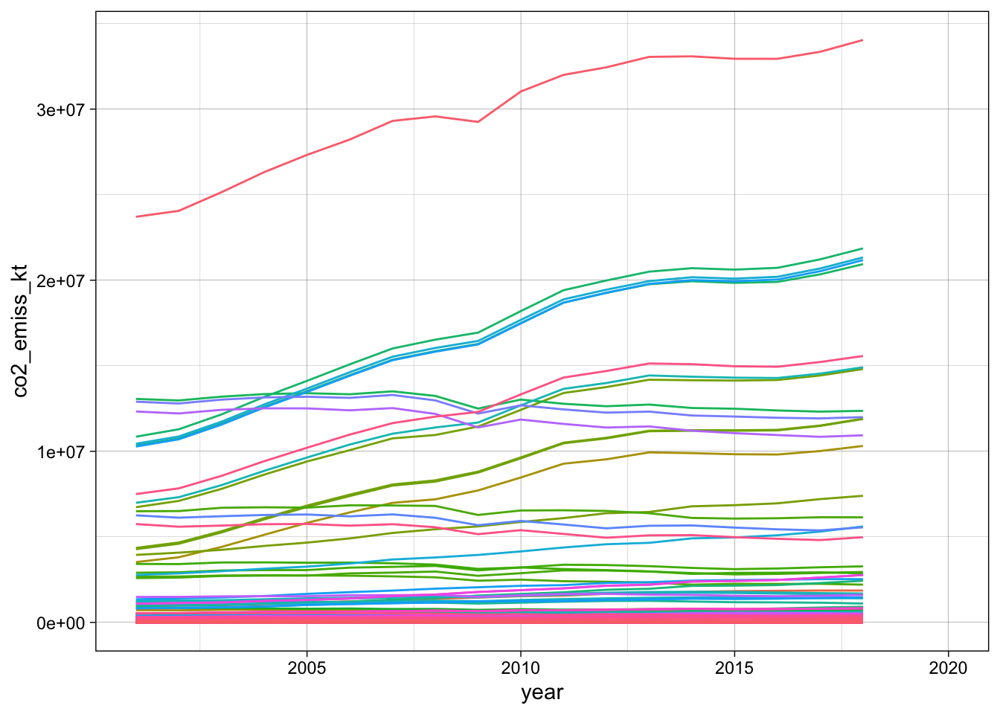

library(tidyverse)
library(janitor)
library(here)Tidying Data
Pivots
wb <- read_csv(here("data", "wb_indicators.csv"), na = c("..", ""))Making Tidy Data
wb_long <- pivot_longer(wb, 5:24, names_to = "year", values_to = "indicator_val") %>%
separate(., year, sep = " ", remove = TRUE, into = c("year", "year_chr")) %>%
select(-year_chr, -`Country Code`, -`Series Code`)
head(wb_long)# A tibble: 6 × 4
`Country Name` `Series Name` year indicator_val
<chr> <chr> <chr> <dbl>
1 Afghanistan Access to clean fuels and technologies for… 2001 9.51
2 Afghanistan Access to clean fuels and technologies for… 2002 10.4
3 Afghanistan Access to clean fuels and technologies for… 2003 11.5
4 Afghanistan Access to clean fuels and technologies for… 2004 12.4
5 Afghanistan Access to clean fuels and technologies for… 2005 13.5
6 Afghanistan Access to clean fuels and technologies for… 2006 14.8 wb_tidy <- wb_long %>%
drop_na(`Series Name`) %>%
pivot_wider(., names_from = `Series Name`, values_from = indicator_val)
head(wb_tidy)# A tibble: 6 × 7
`Country Name` year Access to clean fuels and techno…¹ Access to electricit…²
<chr> <chr> <dbl> <dbl>
1 Afghanistan 2001 9.51 NA
2 Afghanistan 2002 10.4 NA
3 Afghanistan 2003 11.5 NA
4 Afghanistan 2004 12.4 NA
5 Afghanistan 2005 13.5 22.3
6 Afghanistan 2006 14.8 28.1
# ℹ abbreviated names:
# ¹`Access to clean fuels and technologies for cooking (% of population)`,
# ²`Access to electricity (% of population)`
# ℹ 3 more variables: `CO2 emissions (kt)` <dbl>,
# `Fossil fuel energy consumption (% of total)` <dbl>,
# `Level of water stress: freshwater withdrawal as a proportion of available freshwater resources` <dbl>Re-naming Columns
- Using names()
#names(wb_tidy) <- c("country", "year", "access_clean_fuels_pp", "access_elect_pp", "co2_emiss_kt", "fossil_fuel_cont_pt", "water_stress")
#head(wb_tidy)- Or a better, safer way using dplyr::rename() since you can’t get the columns mixed up
wb_tidy <- wb_tidy %>%
rename(country = `Country Name`,
access_clean_fuels_pp = `Access to clean fuels and technologies for cooking (% of population)`,
access_elect_pp = `Access to electricity (% of population)`,
co2_emiss_kt = `CO2 emissions (kt)`,
fossil_fuel_cont_pt = `Fossil fuel energy consumption (% of total)`,
water_stress = `Level of water stress: freshwater withdrawal as a proportion of available freshwater resources`) %>%
mutate(year = as.numeric(year)) #year a character so change to numeric
head(wb_tidy)# A tibble: 6 × 7
country year access_clean_fuels_pp access_elect_pp co2_emiss_kt
<chr> <dbl> <dbl> <dbl> <dbl>
1 Afghanistan 2001 9.51 NA 810
2 Afghanistan 2002 10.4 NA 1100
3 Afghanistan 2003 11.5 NA 1350
4 Afghanistan 2004 12.4 NA 1130
5 Afghanistan 2005 13.5 22.3 1640
6 Afghanistan 2006 14.8 28.1 1940
# ℹ 2 more variables: fossil_fuel_cont_pt <dbl>, water_stress <dbl>Plotting
ggplot(wb_tidy, aes(year, co2_emiss_kt, color = country)) +
geom_line() +
theme_linedraw() +
theme(legend.position = "none") #too many countries to have a legend